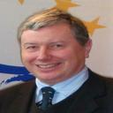

FOSSGIS2010 - 22
FOSSGIS 2010
Freie und Open Source Software für Geoinformationssysteme

Peter Wolff
Fachbuchautor, Lehrbeauftragter an der Hochschule Fulda und seit mehr als 20 Jahren freiberuflich mit der eigenen Marke "Rent a Pressereferent" im Bereich Presse- und Öffentlichkeitsarbeit tätig.
Seit mehr als 20 Jahren betreue ich freiberuflich Klein- und Mittelständische Unternehmen, Verbände und Freiberufler/Künstler in ihrer Presse- und Öffentlichkeitsarbeit und in Marketingfragen. Von Hause aus Wirtschaftswissenschaftler (Dipl.-Kfm. an der HS Merseburg)kam der Bezug zur GIS-Welt erst während eines späteren Aufbaustudiums der Geoinformatik an der FH Mainz zum Master of Engineering.
In den letzten Jahren konnte ich am Fachbereich Elektrotechnik und Informationstechnik an der Hochschule Fulda einige Erstsemester-Projektgruppen als Lehrbeauftragter im Bereich Projektmanagement betreuen und hierbei auch Projektthemen vorgeben. Ein erstes OpenStreetMap-Projekt konnte im Wintersemester 2008/09 abgeschlossen werden und präsentierte sich auch auf der letztjährigen FOSSGIS in Hannover als Posterbeitrag (Erfassung des Hochschulcampus in Fulda für OSM) und wurde von mir auch auf der letztjährigen AGIT in Salzburg vorgestellt. Im abgelaufenen WS 2009/10 wurden drei weitere OSM-Projekte realisiert, die nun auf der FOSSGIS 2010 vorgestellt werden.
Als Autor habe ich Bücher zu den Themen Weblogs, Internetmonitoring, Kryptographie veröffentlicht. Daneben schreibe ich zu den Themen PR, Marketing, Handel, Wissenschaft und zu Geschichtsthemen.
Contact
info at wolff-pr dot de
Links
| Vorträge | Vorträge (Meist 20 Minuten plus Fragen+Antworten) |
| OSM-Vorträge | Vorträge im OSM-Teil (Meist 20 Minuten plus Fragen+Antworten) |
| Workshops | Kostenpflichtige Workshops am Rechner (90 Minuten) |
| Community Sessions | Moderierte Vortrags- und Diskussion-Veranstaltung (60-90 Minuten) |
| Anwendertreffen | Treffen für Anwender bestimmter Software |
| Developer-Treffen | Treffen für Entwickler bestimmter Software |